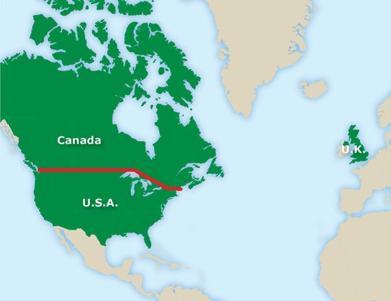
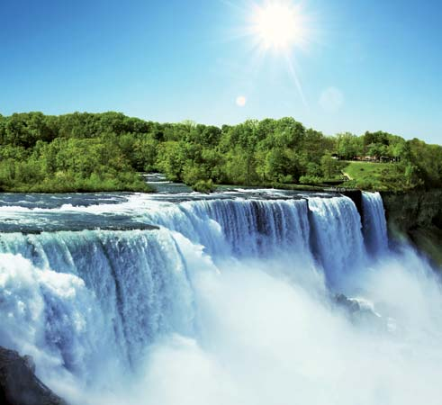
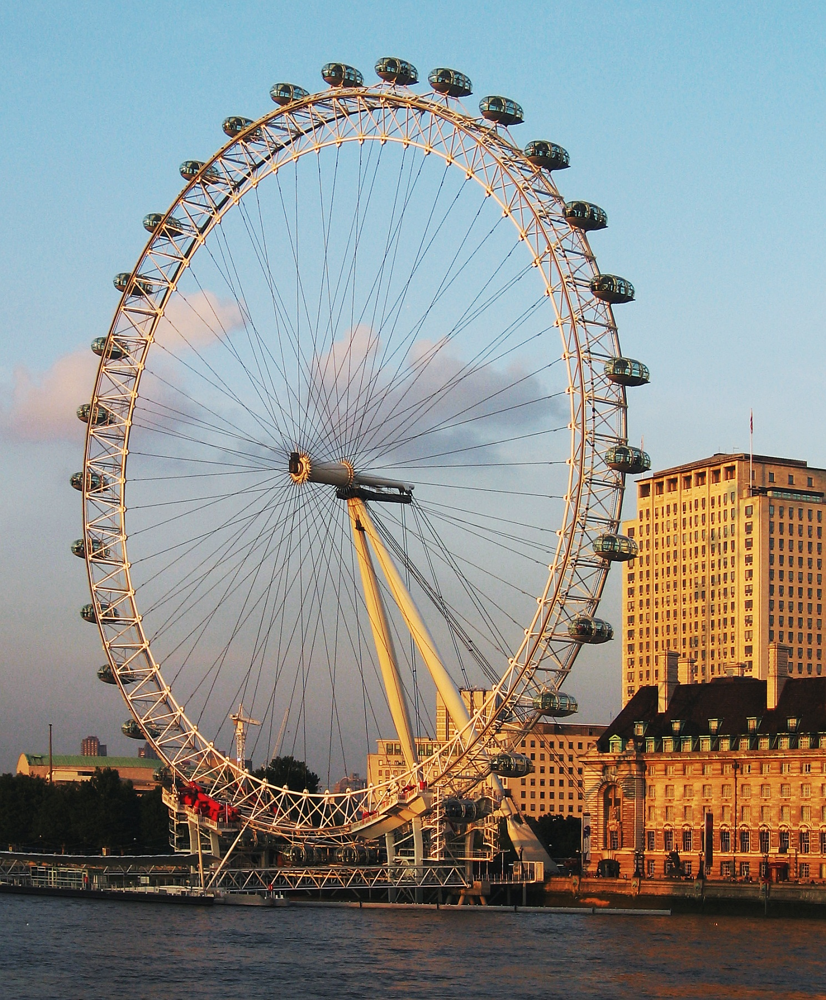

Select Your Destination from Given Map
H
o
t
e
l

S
t
a
r
Canada

Following are Canada's most vistied places : - 1.Niagara Falls 2.Banff National Park 3.CN Tower 4.Stanley Park 5.Royal Ontario Museum 6.Canada's Wonderland 7.Notre-Dame Basilica 8.Canadian War Museum 9.Lake Ontario 10.Butchart Gardens 11.Art Gallery of Ontario 12.Casa Loma 13.Royal British Columbia Museum 14.Rideau Canal 15.Canadian Rockies
T
o
u
r
s
USA
Following are USA's most vistied places : - 1.Golden Gate Bridge 2.Walt Disney World 3.Magic Kingdom 4.Statue of Liberty 5.Disneyland 6.Yellowstone National Park 7.Islands of Adventure 8.Great Smoky Mountains National Park 9.Metropolitan Museum of Art 10.Las Vegas Strip 11.Alcatraz Island 12.Lincoln Memorial 13.Times Square 14.Getty Center 15.Grand Canyon
G
u
i
d
e
UK

Following are UK's most vistied places : - 1.Tower of London 2.Windsor Castle 3.Big Ben 4.Palace of Westminster 5.British Museum 6.Stonehenge 7.Churchill War Rooms 8.Victoria and Albert Museum 9.National Railway Museum 10.London Eye 11.Kelvingrove Art Gallery and Museum 12.Natural History Museum, London 13.St. James's Park 14.Wallace Collection 15.Roman Baths
Home
Hotels
Contact Us